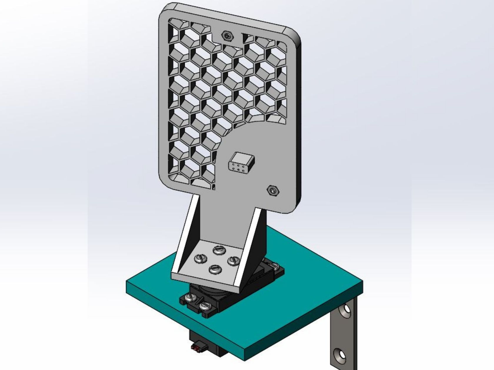

PCB Installation Fixture
Designed to poka-yoke the PCB-insertion operation in smart light switch housings. The fixture reduced the cycle time by 31%.

Test Stand
Designed and programmed a WiFi enabled occupancy test stand for new smart thermostats. The test stand allowed engineers to conduct testing in confined locations, mimicking houshold use.
Smart thermostats were connected to the test stand via a short adapter to allow easy data aquisition. The test stand was connected to a servo motor allowing the PIR sensor's performance to be evaluated at various viewing angles.